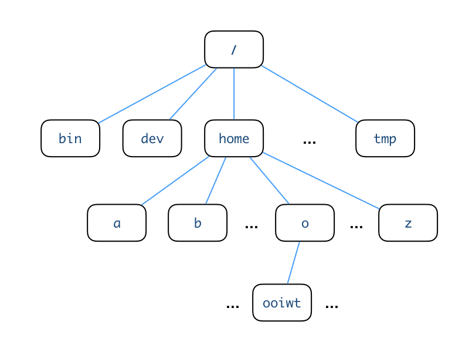

Unix CLI: The Essentials
This article is adapted from the notes of the Unix@Home Workshop held in August 2020. It contains the essential knowledge that a CS2030S students need to survive using the PE nodes to do the labs (and to use a Unix CLI in general).
After following this article, students should be able to:
- navigate comfortably in a Unix file system using shell commands
cd,pwd, andls - use
.,..,~or/to form a relative or absolute path name to a file - organize files in a Unix file system using shell commands
mkdir,rmdir,mv,rm, andcp - view the content of the file using
cat,moreorless - manage the permission of a file using
chmod - perform standard input/output redirection with
<and>
Unix Directory
Unix organizes files according to a directory structure. The following shows an example.

This structure is also known as a directory tree.
There are two important directories that you need to know.
Root Directory
The root directory is the directory at the top of the directory tree1. It is simply referred to as /, without any name. Under the root directory are many other systems directory, which a casual user does not normally need to (and have no permission to) modify.
Home Directory
Each user has his/her own home directory. The above figure shows where the home directory of the user ooiwt resides in the directory tree. The user ooiwt may create files or directories in his/her home directory, but not elsewhere unless permission is given.
The home directory is referred to with the symbol ~ in bash. Sometimes we add the username behind ~ to indicate the home directory of the other user. E.g., ~bob means the home directory of a user named bob.
Current Working Directory
A user can navigate around the directory tree. The current working directory is the directory that the user is currently in. In contrast to the root and home directory, which are fixed2, the current working directory changes as the user moves around. Knowing the current working directory is important since this is the default location in the directory tree a command executes. As such, many systems by default display the current working directory as part of the bash command prompt.
The current working directory is referred to with the symbol . in bash.
Parent Directory
The parent directory is directory one layer up from the current directory.
The parent directory is referred to with the symbol .. in bash.
To summarize, here are the short form representations:
| Symbol | Meaning |
|---|---|
/ |
the root directory |
~ |
the home directory |
. |
the current working directory |
.. |
the parent directory |
Specifying a Path
To specify a directory or a file in the Unix directory tree, we can use either the absolute path or the relative path.
Absolute path
The absolute path is constructed as follows, starting from the root of the directory structure, find a path (a sequence of directories) to the location that you want to specify, then concatenate the names of the directories together, separated by the forward-slash /. This is a similar notation used for Web site URLs so you should already be familiar with it. For instance, the path
/home/o/ooiwt is the absolute path of the directory named ooiwt in the figure above.
An absolute path is independent of the current working directory and always start with / or ~
Relative path
The relative path is dependent on the current working directory. To refer to another location, start from the current directory, and find a path (a sequence of directories) to the location that you refer to. When we go up a tree, we use .. to represent the directory.
For example, referring to the figure above, if we are in the directory /home/b, and we wish to refer to /home/o/ooiwt, we can use the relative path ../o/ooiwt. If we wish to refer to /home/b/bob, we can use the relative path bob.
A relative path never starts with /.
Directory-related Commands
Now, let's take a look at some basic commands available in bash that
deals with navigation and directories.
pwd: Print Current Working directory
pwd shows you which directory you are currently in.
Type pwd into the command prompt, and it will print the absolute path to your current working directory. For instance,
Suppose you are in /home/o/ooiwt, entering
1 | |
1 | |
ls: LiSt content of a directory
The ls list the content in the current working directory.
Rule of Silence
Unix follows the economical rule of silence: programs should not print unnecessary output, to allow other programs and users to easily parse the output from one program. So, if ls has nothing to list, it will list nothing (as opposed to, say, printing "This is an empty directory.")
mkdir: MaKe a subDIRectory
The mkdir command creates a subdirectory with the given name in the current directory.
In the example below, we assume that we start with an empty directory.
1 2 3 4 5 6 | |
Here, we create a directory called workshop. Now, when we ls, you can see the directory listed.
You may also use ls -F for more information (-F is one of the many options/flags available for the ls command. To see a complete list of the options, refer to the man pages, i.e., man ls.)
The slash / beside the filename tells you that the file is a directory. A normal file does not have a slash beside its name when "ls -F" is used.
You may also use the ls -l command (hyphen el, not hyphen one) to display almost all the file information, include the size of the file and the date of modification.
Use Up Arrow for Command History
bash maintains a history of your previously executed commands, and you may use the Ctrl+P (previous) and Ctrl+N (next) to
go through it. Press the Ctrl+P until you find a previously executed command. You may then press Enter to execute it or edit the command before executing it. This is handy when you need to repeatedly execute a long bash command.
cd: Change Directory
To navigate in the directory tree, changing the current working directory from one to another, we use the cd command.
1 2 3 4 5 | |
Suppose our starting working directory is /home/o/ooiwt, after we cd into workshop, the current working directory becomes /home/o/ooiwt/workshop. Note that cd can take in either an absolute path or a relative path. The example above takes in a relative path as the argument.
As mentioned in "Unix CLI: Background", it is common to include the current working directory into the shell's prompt. So, you may see your command prompt updated to include the new working directory.
Entering cd alone (without argument) brings you back to your home directory.
rmdir: ReMove a subDIRectory
rmdir removes a subDIRectory in the current directory -- note that a directory must be empty before it can be removed.
The command
1 | |
File Management
This note assumes that you are familiar with navigation with the Unix directory structure.
We will now learn some commands to help us deal with files.
Let's recreate the workshop directory in case you have already
deleted it with the rmdir at the end of the last unit.
1 2 3 | |
All of the above commands should complete successfully and silently. Let's populate the directory with a new file. Cut-and-paste the command below into the command prompt :
1 | |
You should see a file being downloaded and saved with an output similar to below:
1 2 3 4 5 6 7 8 9 10 | |
Now run ls, and you should see that ls returns test.txt as the content of the current working directory.
1 2 | |
cp: CoPy files
Now let's try to copy this file to another name.
1 2 3 | |
test.txt into foo.txt.
If you want to copy the whole directory, use -r flag, where r stands for copying recursively.
Now let's create another directory called copy.
1 2 3 4 | |
Run pwd to double-check that you are in the directory called copy that is at the same level as workshop.
Now, we are going to use cp with the -r flag, to copy recursively the whole of workshop directory over.
1 | |
The command cp takes in two arguments, the first is the source, and the second is the destination.
Note that we use . above to indicate that we wish to copy the whole sub-tree of workshop over the current directory. The command should complete without any message. Upon completion, you can run ls to double-check that the workshop directory exists under workshop.
!!! Warning: cp Overwrites
If there is an existing file with the same name, cp will overwrite
the existing file without warning.
mv: MoVe or rename files
Now, let's change directory back to workshop.
1 | |
mv command to rename foo.txt into bar.txt.
1 2 3 4 5 | |
As you can see above, just like cp, mv takes in two arguments, the first is the source and the second is the destination.
If the destination of mv is a directory, however, instead of renaming, the mv commands move the source to the destination directory.
1 2 3 4 5 | |
Here, you can see that we have moved foo.txt over to the current directory.
!!! Warning: mv Overwrites
If there is an existing file with the same name, mv will overwrite
the existing file without warning. mv comes with a -i flag that interactively asks you if you are sure if you want to overwrite a file. It is a good idea to always run mv -i. Hit Y to continue overwriting the existing file. You can look up on the Internet on how to make -i the default using alias command in .bashrc.
Use Tab for Name Completion
If you have a very long file name, you may use the bash auto-completion feature to reduce typing. For instance, you may type:
1 | |
bash will complete the filename for you if there is only one filename with the prefix "t". Otherwise, it will fill up the filename to the point where you need to type in more characters for disambiguation.
The Tab key can also complete the name of a command.
rm: ReMove files
We can use rm to remove files.
Be careful with this command -- files deleted cannot be restored. There is no trash or recycled bin like in Mac or Windows.
1 2 3 4 5 | |
rm -rf
While the Unix command line provides lots of flexibility and power, with great power comes great responsibility. Some of the commands are extremely dangerous. rm -rf * is the most famous one. The notation * refers to all files, and the flag -f means forceful deletion (no question asked!), and -r means remove recursively everything under the current directory tree. Accidentally running this command has ruined many lives. Read more here
rm comes with a -i flag that interactively asks you if you are sure if you want to delete a file. It is a good idea to always run rm -i.
1 2 | |
Type y or n to answer yes or no respectively.
cat: CATenate file content to screen
To quickly take a look at the content of the file, use the cat command.
1 2 | |
less is a variant of cat that includes features to read each page leisurely and is useful for long files.
1 | |
In less, use <space> to move down one page, b to move Back up one page, and q to Quit.
man: Online MANual
An online help facility is available in Unix via the man command (man stands for MANual). To look for more information about any Unix command, for example, ls, type man ls. Type man man and refer to Man Pages to find out more about the facility. To exit man, press q.
File Permission Management
File permissions determine who can do what to a file. Typically, you do not need to fiddle with the file permission, but when you need to, it is usually for an important reason and it is critical to do it right.
The What of File Permissions
Let's look at what you can do to a file first. Unix file permissions allow control of three actions: r (read), w (write) and x (execute). These permission settings allow the following different actions to be done for regular files and directories.
| permission | effect on file | effect on directory |
|---|---|---|
r |
reading the content of a file | read the names of the files in the directory |
w |
writing into a file | create/delete/rename files in the directory |
x |
executing a file | access contents and meta-info (size, creation time) of files in the directory |
These three actions can be controlled independently.
The permissions on a file can be expressed in two ways:
-
using symbolic notation. For instance,
rwx,r-x,-wx, where a-means that the corresponding permission is not given (in the order ofr,w,x). -
using a numerical notation. This notation uses a digit between 0 and 7, which is computed as a sum of the individual digit representing the permissions:
ris represented with 4,wis represented with 2, andxis represented with 1. For instance,r-xhas a numerical representation of 5, and-wxhas a numerical representation of 3.
The Who of File Permissions
Unix divides the users into three classes: u is the user who owns the file; g refers to the users in the same group as the user; and o are all the other users.
The permissions can be controlled separately for these classes of users. The permission notation simply concatenates the file permissions of each class of users together, in the order of u, g, and o.
For instance, the permission of 644, or rw-r--r--, on a file means that:
- the owner can read and write
- the group users can only read
- all the other users can only read
Checking file permission
You can view the permission of a file by using the ls -l command (l for long format):
1 2 | |
Ignoring the first - and the last @, you can see that the permission of test.txt is 644.
The chmod command
You can use chmod command to change the permissions of a file or a directory.
For instance,
1 2 3 | |
w to both group and other users1.
An alternative way is to just specify the changes. To remove the write permission from others, you can write:
1 2 3 | |
Common Scenarios for chmod
Here are some scenarios where you might need to use the chmod command:
-
If you use the SoC Unix server to do your homework, you should prevent the directory that stores your homework from being accessible by other users. Make sure that your homework directory as the permission of
700. -
If you download a file from the Internet and you do not have the permission to read it, you should do a
u+rto give yourself the read permission. -
A program should have execution permission to run. If you have a script or an executable file that you can't run, give yourself the execution permission
u+x.
Standard Input/Output
History
Two of the design decisions of Unix that lead to its simplicity are the decisions to (i) decouple the physical input/output devices from the programs, allowing programs written for Unix to read from abstract input and output devices; and (ii) make all programs read and write from these abstract input and output devices by default. Before Unix, the older operating systems often require programmers to painstakingly set up connections to the teletype machines and other devices for reading inputs and printing outputs. With Unix, programmers can now focus on solving the tasks at hand and let Unix takes care of the input and output.
The two abstract devices that Unix provides are called standard input and standard output. By default, the standard input refers to the keyboard and the standard output is the terminal.
Examples using cat and wc
Let's look at these concepts closer, by examining some examples.
Remember cat? The cat command takes in a filename and it prints the content of the file to the standard output.
1 2 | |
If no filename is given, cat by default try to read from the standard input. Try running:
1 | |
You will see that the command is waiting for you to type in something. Type in anything, as soon as you press Enter, cat is going to read in the text from the standard input, as if it is the content of a file, and then prints the content to the standard output. You can keep typing, supplying text to cat, or you can type Ctrl+D to send the end-of-input command to cat.
Let's look at another command, wc. wc is a utility that counts the number of lines, words, characters. If we call wc and supply it a file name, it will count the number of lines, words, and characters in that given file.
1 2 | |
The output means that there is 1 line, 11 words, and 64 characters in the file test.txt.
But if you do not pass in any file name, wc is going to read in the text from the standard input, as if it is the content of a file, and prints the three counters to the standard output. Go ahead and try:
1 | |
You will see that the wc command is waiting for you to type in something. Type in a few sentences, you can hit Enter for a new line. When you are done, type Ctrl+D. wc will count the number of lines, words, and characters for the text that you just entered.
Output Redirection
By defining two abstract input and output devices (or channels), Unix frees the programmers from worrying about where to read the input from and write the output to. Most of the time, we can write the output of the program to the standard output. In instances where we need to write the output to another location, we can just redirect the output.
The operators > and >> are used to redirect the standard output to a file. The difference is that > will overwrite the given file, while >> will concatenate into the given file.
For example:
1 2 3 | |
The first command redirects the output from wc to a file named test.count, so you do not see anything printed to the output anymore. We can check by running cat on the new file test.count -- indeed the original output from wc is now stored in the file test.count.
If we repeat the command wc test.txt > test.count again, you can see that the file has been
overwritten with the output from wc again. But if we replace > with >>, a new line is concatenated into test.count. So the file now has two lines.
1 2 3 4 5 6 7 | |
Input Redirection
The operator < is used to redirect a file into the standard input. So, instead of reading from the keyboard, we can now read from a file. Commands such as cat and wc already support from a file directly, so there is no difference in terms of functionality to run the commands by passing in the file name, or by using the < operator.
1 2 3 4 5 6 7 8 | |
Note the slight difference in the output format of the second wc above -- it no longer prints the file name since from wc points of view, it is read from the standard input and not from a file, so it is not aware of the file named test.txt
In most CS programming assignments, however, to keep things simple, you will be asked to read from the standard input only, so the < is a great time-saver -- you do not have to repeatedly type in the same input data over and over from the keyboard. You can just save the input data in a file, then redirect it to standard input with the < operator.
Other Useful Online Tools
- explainshell explain each shell command for you
-
Giving write permission to other users is a security risk and you should not do this unless you know what you are doing. ↩↩
-
Not exactly true -- since Unix is designed to be flexible, even the root and the home directory can be changed! But let's not worry about that for now since there is no good reason to do that as a beginner. ↩